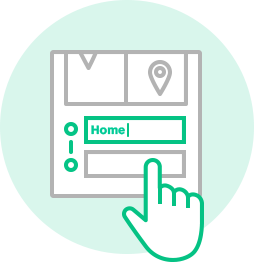

QUICK TIP:
Name Your Location
Now that you've caught a drive, tap each text field to personalize your drive and name your location
Now that you've caught a drive, tap each text field to personalize your drive and name your location